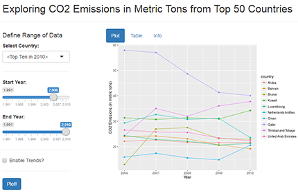

Author: Julia Phelps
Date: July 7th, 2016
Course Project for the class Developing Data Products, offered through Coursera.org.

The original dataset used for this analysis comes from the Carbon Dioxide Information Analysis Center (CDIAC) in the USA. It represents worldwide information on CO2 Emissions in metric tons from fossil fuels, and spans the years 1751 to 2012. Data is public domain, and used with permission from the CDIAC.
---
`r opts_chunk$set(message=FALSE,comment="")`
## **Exploring C02 Emissions Data**
<font size=3>
Author: Julia Phelps<br>
Date: July 7th, 2016<br>
*Course Project for the class* ***Developing Data Products,*** *offered through [Coursera.org](https://www.coursera.org/).* </font>

## About the Data:
<font size=3>The original dataset used for this analysis comes from the [Carbon Dioxide Information Analysis Center](http://cdiac.ornl.gov/) (CDIAC) in the USA. It represents worldwide information on CO2 Emissions in metric tons from fossil fuels, and spans the years 1751 to 2012. Data is public domain, and used with permission from the CDIAC.</font>
Much of the original data is incomplete, and therefore the data used in this analysis and accompanying Shiny app necessarily represent a subset of the original data. The final tidy dataset, co2_data, includes only the Top 50 CO2-producing countries (for the year 2010), and spans the years 1991 to 2010. The code used to process this data is below:
## Load required packages
require(xlsx)
require(dplyr)
require(reshape2)
## Determine countries with highest CO2 emissions in 2010
co2_country <- data.frame(country=rownames(co2_raw))
co2_most2010 <- bind_cols(co2_country, select(co2_raw, contains("2010"))) %>%
arrange(desc(`2010`))
co2_top50_2010 <- as.character(co2_most2010[1:50,]$country)
co2_dataTemp <- co2_raw[co2_top50_2010, ]
co2_dataTemp <- co2_dataTemp[,232:251] ## subset to 1991 to 2010
## Create a separate top 10 file
co2_top10_2010 <- as.character(co2_most2010[1:10,]$country)
co2_dataTemp_top10 <- co2_raw[co2_top10_2010, ]
co2_dataTemp_top10 <- co2_dataTemp_top10[,232:251]
## Tidy Top 50 dataset with melt()
co2_data <- cbind(country=rownames(co2_dataTemp), co2_dataTemp)
rownames(co2_data) <- NULL
co2_data <- melt(co2_data, id.vars=c("country"), variable.name="year",
value.name="CO2_emissions")
co2_data$year <- as.numeric(as.character(co2_data$year))
## tidy Top 10 dataset with melt()
co2_data_top10 <- cbind(country=rownames(co2_dataTemp_top10),
co2_dataTemp_top10)
rownames(co2_data_top10) <- NULL
co2_data_top10 <- melt(co2_data_top10, id.vars=c("country"),
variable.name="year", value.name="CO2_emissions")
co2_data_top10$year <- as.numeric(as.character(co2_data_top10$year))
---
## Data Processing
<font size=3>Much of the original data is incomplete, and therefore the data used in this analysis and accompanying Shiny app necessarily represent a subset of the original data. The final tidy dataset, *co2_data*, includes only the Top 50 CO2-producing countries (for the year 2010), and spans the years 1991 to 2010. The code used to process this data is below:</font>
```{r readData, cache=TRUE, echo=FALSE, eval=TRUE}
## Extracting the data from *.xlsx format
co2_raw <- read.xlsx("./assets/data/indicator CDIAC carbon_dioxide_emissions_per_capita.xlsx",
colIndex=2:254, sheetIndex=1, header=TRUE, endRow=236)
co2_rowNames <- as.vector(read.xlsx("./assets/data/indicator CDIAC carbon_dioxide_emissions_per_capita.xlsx",
colIndex=1, sheetIndex=1, header=TRUE, endRow=236))
rownames(co2_raw) <- co2_rowNames[,1]
co2_colNames <- gsub(pattern="X", replacement="", names(co2_raw))
colnames(co2_raw) <- co2_colNames
```
```{r cleanData, echo=TRUE, eval=TRUE}
## Load required packages
require(xlsx)
require(dplyr)
require(reshape2)
## Determine countries with highest CO2 emissions in 2010
co2_country <- data.frame(country=rownames(co2_raw))
co2_most2010 <- bind_cols(co2_country, select(co2_raw, contains("2010"))) %>%
arrange(desc(`2010`))
co2_top50_2010 <- as.character(co2_most2010[1:50,]$country)
co2_dataTemp <- co2_raw[co2_top50_2010, ]
co2_dataTemp <- co2_dataTemp[,232:251] ## subset to 1991 to 2010
## Create a separate top 10 file
co2_top10_2010 <- as.character(co2_most2010[1:10,]$country)
co2_dataTemp_top10 <- co2_raw[co2_top10_2010, ]
co2_dataTemp_top10 <- co2_dataTemp_top10[,232:251]
## Tidy Top 50 dataset with melt()
co2_data <- cbind(country=rownames(co2_dataTemp), co2_dataTemp)
rownames(co2_data) <- NULL
co2_data <- melt(co2_data, id.vars=c("country"), variable.name="year",
value.name="CO2_emissions")
co2_data$year <- as.numeric(as.character(co2_data$year))
## tidy Top 10 dataset with melt()
co2_data_top10 <- cbind(country=rownames(co2_dataTemp_top10),
co2_dataTemp_top10)
rownames(co2_data_top10) <- NULL
co2_data_top10 <- melt(co2_data_top10, id.vars=c("country"),
variable.name="year", value.name="CO2_emissions")
co2_data_top10$year <- as.numeric(as.character(co2_data_top10$year))
```
```{r dataDims, eval=TRUE, echo=FALSE}
dimTop50 <- dim(co2_data)
dimTop10 <- dim(co2_data_top10)
```
Our final Top 50 dataset, co2_data, looks much different than the original:
head(co2_data)
country year CO2_emissions
1 Qatar 1991 36.596359
2 Trinidad and Tobago 1991 17.191717
3 Kuwait 1991 5.017059
4 Netherlands Antilles 1991 26.877114
5 Brunei 1991 22.422118
6 United Arab Emirates 1991 29.848837
---
## Final Data
<font size=3>Our final Top 50 dataset, *co2_data*, looks much different than the original:</font>
- <font size=3>It has been subsetted by the top 50 CO2-producing countries over the most recent complete year (2010), and only includes the years 1991 to 2010.</font>
- <font size=3>By reformatting it with melt(), we now have a tidy dataset with one observation per row. This ensures that it will work well with *ggplot2()* in our Shiny app.</font>
- <font size=3>The new dataset's dimensions are `r dimTop50[1]` rows by `r dimTop50[2]` columns.</font>
- <font size=3>We also include a top 10 countries dataset, *co2_data_top10*, for use in the app.</font>
```{r viewData, echo=TRUE, eval=TRUE}
head(co2_data)
```
Link to the app: https://juliaphelps.shinyapps.io/CO2Emissions_app/
In the left panel, you can:
In the right panel, there are tabs:
---
## App Functionality
<font size=3>Link to the app: [https://juliaphelps.shinyapps.io/CO2Emissions_app/](https://juliaphelps.shinyapps.io/CO2Emissions_app/)</font>
In the left panel, you can:
- <font size=3>Use the ***Select Country*** dropdown to select individual countries or a subset of the top 10 countries.</font>
- <font size=3>Use the ***Start Year*** and ***End Year*** sliders to select a single year or range of years.</font>
- <font size=3>Use the ***Trends*** checkbox to view trends in countries' CO2 emissions. This activates a fitted lm() model and associated confidence intervals on the plots.</font>
In the right panel, there are tabs:
- <font size=3>View interactive plots in the ***Plot*** tab.</font>
- <font size=3>View the subsetted Top 50 dataset in the ***Top 50*** tab.</font>
- <font size=3>View more information about the app and the original data in the ***Info*** tab.</font>
*Disclaimer: This analysis was designed on a Windows 8 64-bit computer using R v3.3.0 and RStudio Version 0.99.902, with all packages up-to-date. Please note that content may differ if you run it in a different environment, including, but not limited to: ability to tidy data, appearance of figures and plots, and formatting results of RMarkdown.*
---
## Further Resources
- <font size=3>The original source of the dataset is on the CDIAC's webpage: <br>
[Carbon Dioxide Information Analysis Center](http://cdiac.ornl.gov/)</font>
- <font size=3>For detailed information, please see the CDIAC's webpage on this dataset: <br>
[http://cdiac.ornl.gov/trends/emis/meth_reg.html](http://cdiac.ornl.gov/trends/emis/meth_reg.html)
</font>
- <font size=3>The dataset can be easily downloaded at [https://www.gapminder.org/](https://www.gapminder.org/data/) and can also be viewed as a GoogleDoc at [https://docs.google.com/spreadsheets/d/1RjqGm7RG82GGVf7E4RXPPwFF7O1So6T0SFx2fVfcUJA/pub?gid=0#](https://docs.google.com/spreadsheets/d/1RjqGm7RG82GGVf7E4RXPPwFF7O1So6T0SFx2fVfcUJA/pub?gid=0#).</font>
- <font size=3>Wikipedia also has information on the dataset, including links to information on all of the included countries. However, please note that the data itself does not appear to be entirely up-to-date.<br>
[https://en.wikipedia.org/wiki/List_of_countries_by_carbon_dioxide_emissions_per_capita](https://en.wikipedia.org/wiki/List_of_countries_by_carbon_dioxide_emissions_per_capita)</font>
<br><br>
<hr><br>
<blockquote><font size=3>*Disclaimer: This analysis was designed on a Windows 8 64-bit computer using R v3.3.0 and RStudio Version 0.99.902, with all packages up-to-date. Please note that content may differ if you run it in a different environment, including, but not limited to: ability to tidy data, appearance of figures and plots, and formatting results of RMarkdown.*</font></blockquote>
| Exploring C02 Emissions Data | 1 |
|---|---|
| Data Processing | 2 |
| Final Data | 3 |
| App Functionality | 4 |
| Further Resources | 5 |
| Table of Contents | t |
|---|---|
| Exposé | ESC |
| Full screen slides | e |
| Presenter View | p |
| Source Files | s |
| Slide Numbers | n |
| Toggle screen blanking | b |
| Show/hide slide context | c |
| Notes | 2 |
| Help | h |